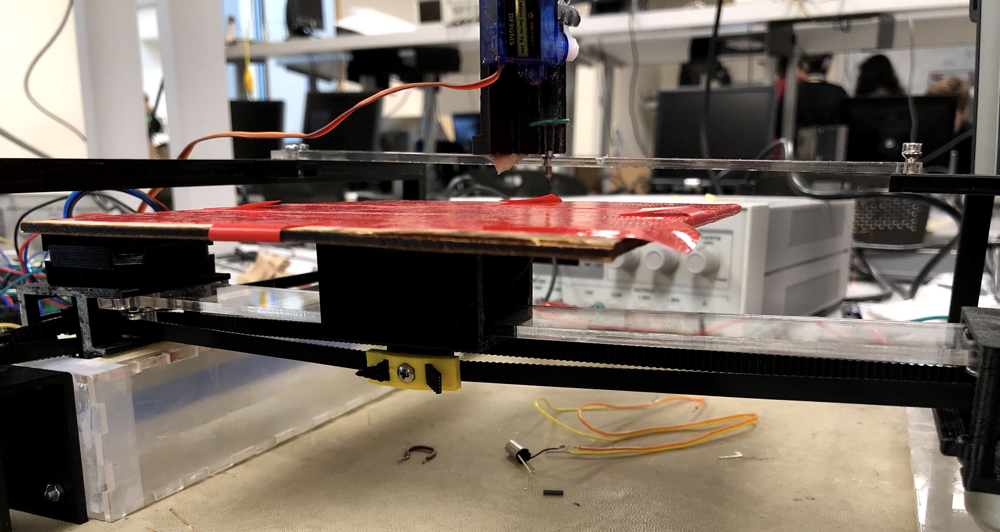

1. Introduction
For our final project, we designed a drawing robot that can turn any computer image into line drawings. Our drawingbot features a pen that moves up and down, a base plate with a piece of paper attached that moves in the x-y plane and a neatly displayed menu on the TFT screen. Our system is consisted of 3 parts, PIC32 microcontroller, the actual “printer” system, and Raspberry Pi for image processing. Our drawing bot is very easy to operate as any user can upload a picture to the Raspberry Pi and run a python script that starts the printing process after calibrations. The menu displayed on the TFT screen connected to the PIC32 provides users a variety of options including adjusting the drawing speed, calibrating the pen and the base plate, displaying the IP address of the Raspberry Pi and two printing modes.
2. High Level Design
Our inspiration comes from viral videos where people draw complex geometries consisting of many lines, and we think that maybe we can implement a drawing bot that draws anything using a pen and a piece of paper. As indicated in the graph above, our project can be broken into three major parts: a PIC32 microcontroller, a Raspberry Pi and a mechanical printing system. From a high-level perspective, the PIC32 controls two stepper motors, a servo motor, and a menu, and the RPi performs the image processing. There are two reasons why we added another RPi to our system. First, due to its limited RAM, the PIC32 cannot store images, not to mention image processing. Second, the PIC32 lacks an operating system, which makes uploading pictures when running the program very difficult.
To start a printing task, we first need to choose a mode on the menu displayed by the TFT screen. There are two modes available: one is the manual mode and the other one is the auto mode prints images from the RPi. Calibration of the servo motor controlling the pen is sometimes necessary because the servo jolts every time the power turns on. A positional servo would be more ideal but ours broke last minute and a continuous servo was used instead. A joystick is used both as a menu controller and printer controller under manual mode. If we choose auto mode, after we pass the selected image to RPi, RPi performs image processing and outputs line tracing segments to PIC32 through UART serial communication. Consequently, PIC32 sends control signals to two stepper motors controlling the position of the board on the x-y plane, and one servo motor controlling the position of the pen on the z-axis.
Regarding the image processing on RPi, we modified a canny edge detector to find the contours of input images and used potrace library for line tracing. With different input images, we modify the parameters of the canny filter to remove noises and pass clean edge images to the line tracing process. The potrace library is used to convert the filtered image into segments of a vector graph and RPi sends the information to PIC32 using Uart Serial communication.
The hardware and software tradeoffs take place sometimes. One thing is that our servo motor can’t 100% make sure the pen will go down to the same position on z-axis all the time, so we improve this problem by allowing software controlling the pen to repeat drawing each line segment twice because our base plate has a good reproducibility. We also reduce the overall cost of hardware by using a cheaper servo motor. Another thing is that we implemented a menu to provide the ease to control different modes. It adds a little software complexity, but it greatly reduces the time to debug as we can change different parameters of the system on the fly. It also provides a more intuitive user-friendly interface.
We believe that our project is compliant with IEEE and other standards since our project aims to combine computer vision with a 2D printer which does not present any danger. We also did not follow any existing standards as we basically developed the system from scratch. We try to provide a user-friendly interface (the menu) and a stable printing system. It is completely safe and harmless to any user. All the images and links we provide on the website are either original or clearly referenced. All the components are designed by us so we did not infringe any patents or copyrights of any company. Any possible conflicts would be purely accidental and coincidental.
3. Hardware Design
a. Mechanical
Our mechanical design consists of a base plate with a piece of paper attached that moves in the x-y plane and a pen above the base plate that moves up and down. The movement of the base plate is controlled by two stepper motors, with one controlling its x-direction movement and the other controlling its y-direction movement. In order to construct our system, we laser cut many acrylic pieces and built a slot that allows the structure attached with one of the stepper motors to slide through. This slot is placed on the left side, and on the other side is simply a flat surface on the same level with the bottom of the slot.
The other stepper motor controls the x-direction movements of the base plate through a pulley system. We achieved this by putting a pulley and a belt inside a 3d-printed hollow box and we attached our stepper motor on this box. Connected on the other side of the belt is a similar hollow structure which has the base plate attached on it. Then, the torque generated by the motor drives the belt, which then drives the plate-box structure to slide on the slider.

The hollow box holding the base plate allows the slider to fit in it perfectly. As shown below, the box also has a ball bearing attached inside it, which produces rolling friction and makes the box slide more smoothly.
In order to control the base plate in y direction, we fixed the other stepper motor to one end of the slot and used that to control how the movable stepper motor slide in the slot. Similar to before, the two stepper motors are connected by a pulley-belt system built inside the hollow box structure. To reduce the friction during sliding, we also attached a ball bearing at the bottom of the hollow box so that the structure rolls in the slot more smoothly. Besides, our box is designed to be perfectly fit in the slot so that it slides without any jiggling. Since it can slide so perfectly in the slot, it became unnecessary to put another slot on the opposite side. We simply connected the other end of the slider holding the base plate to a hollow box with a ball bearing inside it and let it slide on the flat surface. It ends up to be sliding perfect in y direction. The system that controls the y-direction movement of the base plate is shown below.

Now that we have a base plate that successfully move in the x-y plane, we only need to control a pen to move in z direction so that it is only down when drawing and up when not drawing. We decided to use a servo motor to control the pen movement since it is cheaper but sufficient to achieve our goal. A positional servo would be more ideal but ours broke last minute and a continuous servo was used instead. We built a higher frame above the base plate and put an acrylic rectangular piece with a hole on it to suppport the pen. As shown in the picture below, we attached a pen and a servo motor together and let it go through the hole in the center. Since a servo motor drives angular motion but we want vertical motion, we attached two small pieces of barriers at the top and bottom of the pen-servo system to convert rotary motion to linear motion. Before using our drawingbot, we have to adjust the vertical position of our pen to make sure it is at the perfect level that touches the paper. Then, after calibration, the pen is moved up to the exact starting vertical position and ready to start working.
b. Electrical
Our system includes a PIC32 microcontroller, a Raspberry Pi 3 B+, two EasyDriver stepper motor drivers, a joystick, and a button.
For a cleaner version of the mess above, below is a schematic of the same circuit.
As we can see, the driver is connected to the PIC32, the stepper motor, and the 5V power. The button is connected to ground and to PIC32 through a 330Ω resistor. The joystick is essentially two 10kΩ potentiometers that act as voltage dividers. They are connected to VDD and GND of the PIC32 as well as ADC pins through 10kΩ resistors. The joystick actually has a built-in button, but when we first tested it, it did not work with our code. We then switched to an external button which made things easier. In retrospect, the button could be active-high instead of active-low, and we could use the joystick alone to control the menu.
4. Software Design
All of our source code can be found here.
a. Communication
As mentioned earlier, the Raspberry Pi handles image processing and line tracing while the PIC32 handles motor control and user interfacing. The two machines communicate using UART with our custom commands. The table below shows the avaliable commands.
| Example Command | Description |
| I 10.148.3.188 | IP address of the RPi is 10.148.3.188 |
| D 1 | Lower pen, move up if 0 |
| X 200 Y 300 | Next point on the plate that the pen needs to be |
When the RPi sends a message, it waits for the ACK message from PIC32 before sending the next message. Upon receiving a message, PIC32 parses the message and turns it into commands. Since the execution time of each command is unknown, PIC32 sends the ACK message, which is the same message that it receives, back to the RPi when the command is finished. Using this mechanism, we can make sure that no messages will be lost during communication.
b. PIC32
Setup
For this project, we did not use the port expander as we only need 10 pins in total. After careful arrangements, we came up with the following pin configuration.
| Pin | Function | Description |
| A0 | Digital output | Motor 1 step output |
| B4 | Digital output | Motor 1 directional output |
| A2 | Digital output | Motor 2 step output |
| B0 | Digital output | Motor 2 directional output |
| A3 | U2RX | Receive pin in serial communication with RPi |
| B8 | U2TX | Transmit pin in serial communication with RPi |
| B9 | OC3 | PWM output to control the servo |
| A1 | AN2 | ADC input for X-axis |
| B13 | AN11 | ADC input for Y-axis |
| B3 | Digital input | Button to operate the menu |
Some key global variables that are either self-explanatory or with comments are listed below.
#define manualMode 0 #define autoMode 1 #define menuMode 2 int currMode = autoMode; int curr_x, curr_y, penDown; // penDown is a boolean vairbale, 1 means down and 0 means up char ip[15]; // buffer that stores the RPi IP address int print_speed = 5000; // delay between step input, explanation later |
Additional setup include setting up ADC for the joystick and PWM for the servo.
CloseADC10(); // ensure the ADC is off before setting the configuration // define setup parameters for OpenADC10 // Turn module on | output in integer | trigger mode auto | enable autosample #define PARAM1 ADC_MODULE_ON | ADC_FORMAT_INTG | ADC_CLK_AUTO | ADC_AUTO_SAMPLING_ON // define setup parameters for OpenADC10 // ADC ref external | disable offset test | enable scan mode | perform 2 samples |
Motor and servo control
To control the stepper motors, we use 2 GPIO pins to communicate with each EasyDriver, the STEP input and the DIR input. The DIR/directional input is a binary value that controls whether the motor spins clockwise or counter-clockwise. The STEP input determines the speed of the stepper motor, as the motor increments one micro step every time there is a posedge/low-to-high transition on the STEP input. Therefore, we created another helper function called delayCycle to help us produce a delay for toggling STEP that is stable and repeatable for accurate speed control.
void delayCycle(int cycle){
int i;
for (i = 0;i < cycle; i++) __asm__("nop");
} |
With every component in place, the updateCoor function uses a for loop to advance steps needed and calculates the delay for each iteration on the fly using print_speed.
To control the servo, we resort to PWM. According to the image below from the datasheet, we need a PWM frequency of 50Hz, which is why 256 and 3125 were picked when setting up the PWM, as . Then, we operate at maximum speed at either direction for a fixed amount of time using the
delayCycle function.

There are 4 threads in total, timer, serial, manual, and menu.
Timer thread
The timer thread is very straightforward. By PT_YIELD_TIME_msec(1000), the thread updates sys_time_seconds approximately every second, and prints information such as current time, current coordinates, and current mode onto the TFT screen if the system is not in menu mode.
Serial thread
The serial thread is a slightly modified version given of the serial thread from Serial_1_2_3_test_all.c. First, we use PT_GetMachineBuffer instead of PT_GetSerialBuffer because the PIC32 is communicaing with the RPi, and not a user with a keyboard. We removed all the functions that were unnecessary to our scenario such as cursor_pos that sets the cursor position for display purposes. We also set the timeout to 1000ms so PIC32 sends an ACK message back to RPi every second. We also made changes to PT_GetMachineBuffer by adding UART2ClearAllErrors() at the end of each call. Since we do not care about the errors, we can keep transmitting and not handle them.
The received message is then parsed into commands and handled differently. With messages that start with 'I', the IP address is stored into the IP buffer and avaliable for the menu. With messages that start with 'D', we call the controlPen function and pass in the value to control the pen. With messages that start with 'X', we call the updateCoor function that updates the coordinates by controlling the motor.
Manual thread
If the user chooses to enter manual mode using the menu, PIC32 stops receiving positional commands that start with 'X' and update the coordinates according to the ADC values from the joystick. Since the ADC is set up on two pins, we obtain both values of ADC10 and call the updateCoor function after denoising.
#define joystick_x 519 #define joystick_y 518 // default ADC values x_adc = ReadADC10(0); y_adc = 1023-ReadADC10(1); updateCoor(curr_x+10*((x_adc-joystick_x)/30),curr_y+10*((y_adc-joystick_y)/30)); |
Menu thread
This thread controls the entire menu. When not in menu mode, the thread waits for the button input and switches to menu mode when the user presses the button. It then iterates through a char* array and prints out every option. Depending on what the user chooses using the joystick and the button, it either prints out more options or the information that the user is after. Finally, it calls different functions to accomplish different tasks specified by the text. Below are images of the TFT display when operating in menu mode.
c. Raspberry Pi
A Rasberry Pi 3 B+ is used for the purpose of image processing. First, the image goes through a canny edge detector and then to the potrace library. The outputs are points representing segments in a vector graph which we can send to PIC32 through serial communication.
Canny edge detector is composed of five steps: noise reduction, gradient calculation, non-maximum suppression, double threshold and edge tracking by hysteresis. For optimal performance of image processing, we modified different parameters to get an edge diagram. Then we use functions of the pypotrace library to get the segment points of the edges in vector graph format. Iterating through those segments, we send PIC32 pairs of coordinates in the x-y plane and the binary number represent the position of the pen in z direction. Before and after each task, the RPi sends "X 0 Y 0" for auto home and "D0” to move the pen away from the paper.
The outputs of the potrace function describes the path in terms of an array of segments. The curves in an image are described by two types of segments, CornerSegment or BezierSegment, as shown below. We choose to use corner segments and eliminate all bezier segments by setting the corner threadshold parameter Alphamax to be 0, allowing no smoothing to be done. This way, our image is defined by traces that consist of many points with small incremental straight lines connecting them
CornerSegment:

BezierSegment:

We also added a cron job so that the Pi detects its own IP address, and sends it through serial to the PIC32 at startup. This ensures users can SSH into the RPi even though it might have a dynamic IP address.
5. Results
We consider our final system reasonably successful. When given an image and the proper threshold, the system produces satisfactory results and enjoyable timelapse videos.


The printing speed is also reasonable. The second image shown above takes about 2 to 3 minutes to draw. When drawing a simpler picture, like the CocaCola logo, our system finishes the drawing in less than 2 minutes.
Below is our demo video.
As Prof. Land says in the video, "reproducibility is quite good." When drawing the same line repetaedly, it is not rare for the pen to draw on the exact same locations. As for usability, our system only requires basic skills such as SSH and using a Linux system.
6. Conclusions
Evaluation
Our design defiantly meets our expectations and even exceeds them in terms of functionality, as we did not plan to have a menu and manual mode at the beginning. We are satisfied with the overall integration and accuracy of this project since our line tracing has a millimeter-level accuracy.
Future Improvements
If we have more time and budget, we would design a better pen-control system with a stepper motor to improve the accuracy of the pen and eliminate the necessity of calibration every time. We could use two threaded rods or linear rails on the x and y-axis to improve the stability of the printing board movement. For software design, we could improve printing efficiency by optimizing the path. Our current path is not optimized as the movement between different segmants is not minimized.
Safety, intellectual and legal consideration
This 2D printer is completely safe and there’s no direct contact with anyone during operation. Regarding intellectual property, our code and mechanical parts are all original except the canny edge detector. Our project is compliant with IEEE ethics standards and there are no safety, intellectual or legal problems involved.
Appendix
A: Approval
The group approves this report for inclusion on the course website. The group approves the video for inclusion on the course youtube channel.
B: Budget
| Name | Part Number | Vendor | Price |
| Big Board | N/A | lab | 10 |
| PIC32 | N/A | lab | 5 |
| Microstick | N/A | lab | 1 |
| Breadboard | N/A | lab | 6 |
| Power Supply | N/A | lab | 5 |
| TFT | N/A | lab | 10 |
| Stepper Motor Drivers | CYT1072 | Amazon | 9.99 |
| Stepper Motor | 17HS16-2004S | Amazon | 12.99 |
| Short Body Nema 17 Bipolar Stepper Motor | 17HS08-1004S | Amazon | 10.99 |
| Belt | KYES51 | Amazon | 6 |
| Joystick | 8541667209 | Amazon | 4.89 |
| Servo | DF9GMS | Amazon | 5.99 |
| Ball Bearing | 2634038 | Amazon | 3.67 |
| Kingston 8GB microSDHC Class 4 Flash Memory Card | N/A | Amazon | 3.99 |
| Pre-owned RPi 3 B+ | N/A | Ebay | 10 |
| Jumper Cables | N/A | lab | 3.5 |
| Acrylic and PLA | N/A | scrap | free |
| Total | 109.01 |
C: Work Distribution
| Mechanical | PIC32 | RPi | Report |
| Zoe and Sijin | Andrew | Zoe, Sijin, and Andrew | Zoe, Sijin, and Andrew |
D: Source Code and Schematics
All of our source code can be found here.
E: References
Sahir, Sofiane. “Canny Edge Detection Step by Step in Python — Computer Vision.” Medium.
Datasheet for the servo can be found here.
Everything about the motor drivers can be found here.